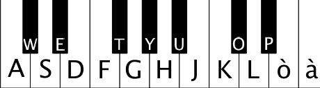

You can use your mouse (or finger, on a touch device) to control the pitch (horizontally) and the filter frequency (vertically). Just click and move your mouse (or finger, of course!)
You can also use your computer keyboard to play! The active keys are the usual keys: A, W, S, E, D... and so on. If you use the keyboard, it become a poly synth!

Load a preset by simply selecting it on the Preset selection control. Tweak the modules, create the sound you desire and then click Save to save your custom preset.
Arrow is a web synth created by Daniele Veneroni and is made using the latest technologies like the Web Audio APIs, Raphael.js, Visibility APIs and many others HTML5 innovations.
The app icon is an adaptation of the original icon by Lorc